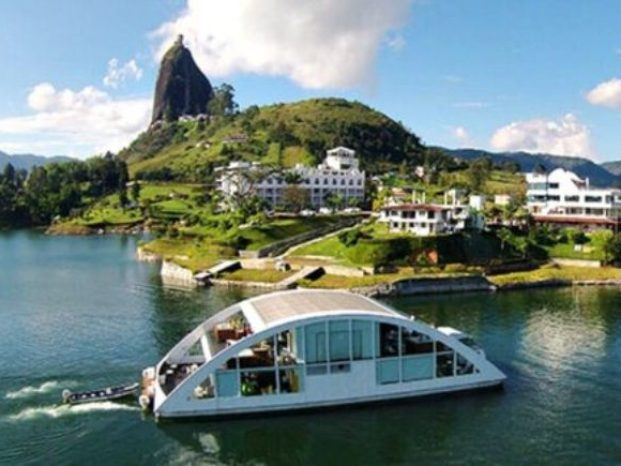
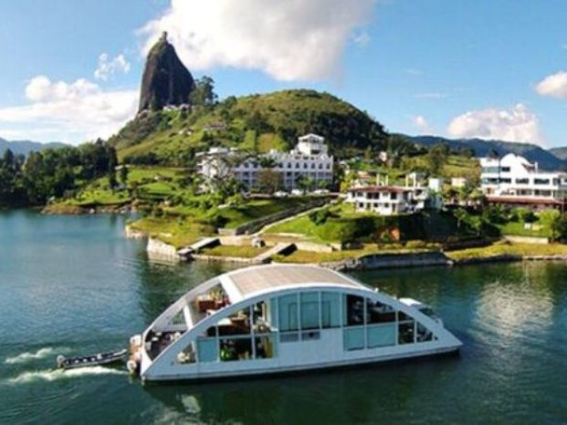
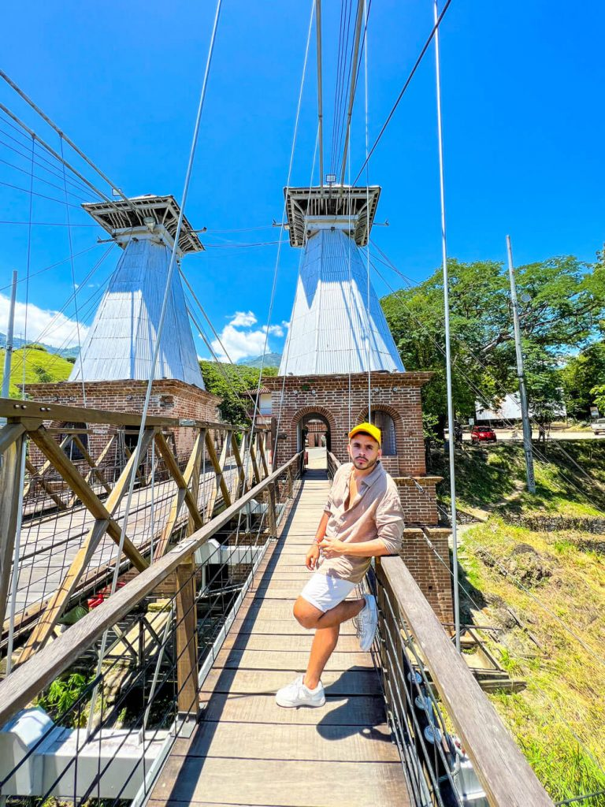
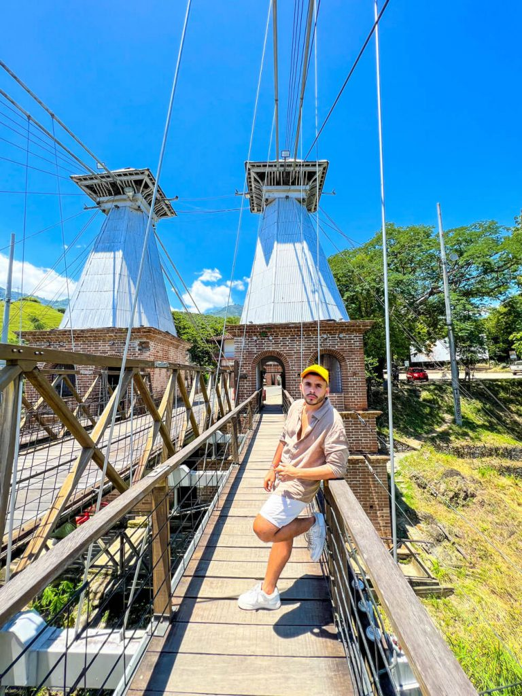
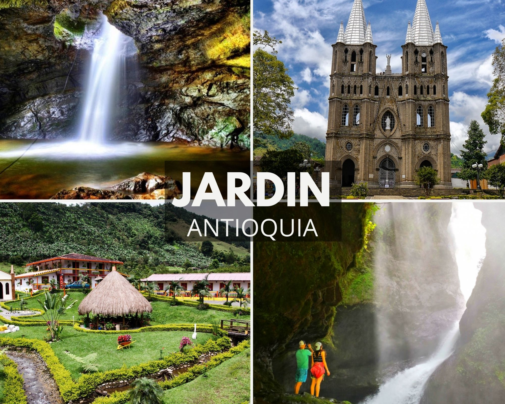
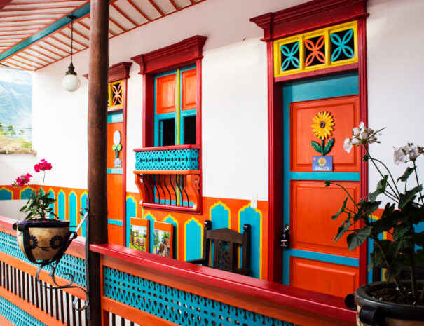
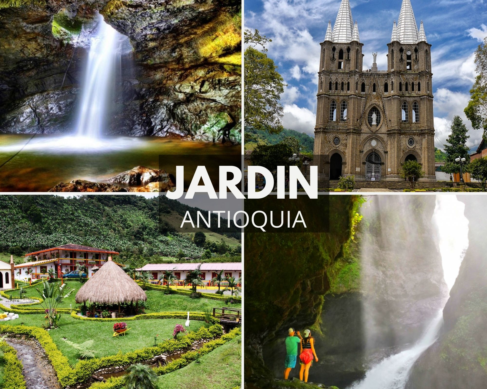
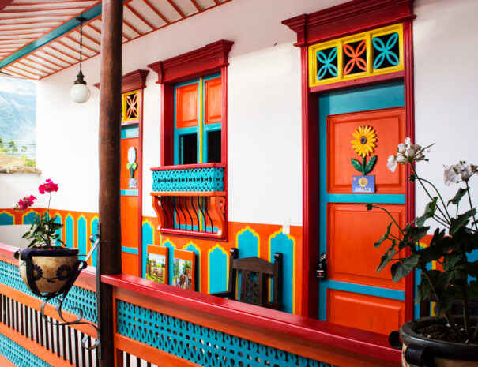

Medellín
Ciudad oficialmente Distrito Especial de Ciencia, Tecnología e Innovación de Medellín, es la capital del departamento de Antioquia. Es la ciudad más poblada del departamento y la segunda más poblada del país después de Bogotá.

Medellín es la capital de la provincia montañosa de Antioquia en Colombia. Es apodada la "Ciudad de la eterna primavera" por su clima templado y alberga la famosa Feria de las Flores anual. El moderno Metrocable conecta la ciudad con los barrios circundantes y tiene vistas del Valle de Aburrá que se encuentra debajo.

El inmenso monolito de la Piedra del Peñol es una de las atracciones turísticas más imponentes de la región. Una vez se sube a la enorme roca, existe una amplia variedad de artesanías y de dulces típicos de la región que se pueden degustar antes de iniciar el descenso.

Andes está ubicado en el extremo suroccidental del departamento de Antioquia a 117 kilómetros de la ciudad de Medellín. Limita al norte con los municipios de Betania, Hispania y Pueblo Rico. Al oriente con los municipios de Jardín y Jericó. Al sur con el departamento de Risaralda. Al occidente con los departamentos de Chocó y Risaralda.

Situado a una hora y media de Medellín, a Santa Fe de Antioquia podrás llegar por tierra, por la carretera que va hacia el Urabá antioqueño. Cuenta con un clima cálido que oscila entre los 25 y 35 grados centígrados, donde te sorprenderá la vegetación de los parques de la ciudad.

Jardín es una localidad andina del noroeste de Colombia, conocida por sus casas de colores brillantes, las exhibiciones florales coloridas y los dulces de leche. La plaza principal, Parque El Libertador, tiene rosaledas, una fuente central y la Basílica de la Inmaculada Concepción, de estilo neogótico y con torres gemelas y vista desde su campanario.
Rionegro es una pequeña ciudad en los Andes colombianos. Aquí se encuentra el aeropuerto internacional de Medellín. En la Plaza de la Libertad está la Catedral de San Nicolás, con sus cúpulas. El Museo Histórico Casa de la Convención se encuentra en un edificio en el que se sancionó una versión de la constitución colombiana en 1863.

En los restaurantes de Antioquia, la influencia indígena a través del fríjol, maíz, yuca, frutas silvestres, hortalizas y tubérculos, prevalecen... seguidamente la influencia española con el aceite, carnes maduradas, aceitunas, harinas, entre otros ingredientes que provenian de sus colonias como el plátano, el aguacate y el arroz.

La Comuna n.º 13 San Javier es una de las 16 comunas de la ciudad de Medellín, Colombia. Está localizada al occidente de la Zona Centro Occidental de la ciudad, limita por el norte con la comuna Robledo, por el oriente con La América y Laureles-Estadio; por el sur con el corregimiento de Altavista, y al occidente con los de San Cristóbal y Altavista.
La Comuna n.º 13 San Javier es una de las 16 comunas de la ciudad de Medellín, Colombia. Está localizada al occidente de la Zona Centro Occidental de la ciudad, limita por el norte con la comuna Robledo, por el oriente con La América y Laureles-Estadio; por el sur con el corregimiento de Altavista, y al occidente con los de San Cristóbal y Altavista.
Ciudad oficialmente Distrito Especial de Ciencia, Tecnología e Innovación de Medellín, es la capital del departamento de Antioquia. Es la ciudad más poblada del departamento y la segunda más poblada del país después de Bogotá.
Ciudad oficialmente Distrito Especial de Ciencia, Tecnología e Innovación de Medellín, es la capital del departamento de Antioquia. Es la ciudad más poblada del departamento y la segunda más poblada del país después de Bogotá.

 

El peñón de Guatapé, o piedra del Peñol (lengua tahamí: Mojarrá), es un monolito de 220 metros de altura, localizado en el término municipal de Guatapé, Antioquia, Colombia. La piedra de El Peñol es una masa granítica, compuesta por cuarzo, feldespato y mica, fue escalada por primera vez en 16 de julio de 1954 por un habitante de la zona, Luis Eduardo Villegas López. Actualmente se puede acceder a su cumbre subiendo los 715 escalones construidos en el monolito.


Su infraestructura en finca hoteles, parques ecológicos y recreativos y lugares para la diversión nocturna son parte de los nuevos desarrollos turísticos de Andes, municipio que guarda en los inmensos árboles del Parque y en sus viejos balcones, toda la historia de la grandeza de Antioquia.

 

Santa Fe de Antioquia es un Pueblo Patrimonio de Colombia que guarda los tesoros históricos más importantes del período colonial y republicano en el departamento de Antioquia.
 



En Colombia existen 17 pueblos patrimonio y Jardín, Antioquia hace parte de este selecto grupo gracias a su encanto particular. Déjate cautivar por la naturaleza que lo rodea, su cultura y la diversidad de tradiciones que tiene..

Rionegro es un municipio de Colombia, ubicado en el departamento de Antioquia. Está localizado en el valle de San Nicolás o también llamado Altiplano del Oriente, en la subregión Oriente, siendo la ciudad con mayor población y la que concentra el movimiento económico de la subregión.
La gastronomía de Medellín se encuentra en los cuatro puntos cardinales, donde la bandeja paisa es la más simbólica seguida del mondongo y las picadas tradicionales con morcilla y arepa. 1. Mamasitas medallo (Poblado) 2. Mondongo`s (La 70) 3. La Gloria de Gloria (Envigado)


Descubre su historia de transformación social recorriendo el Graffitour y dejándote envolver por los colores de los murales de artistas en su mayoría locales, que han retratado su testimonio de resiliencia a través del arte.